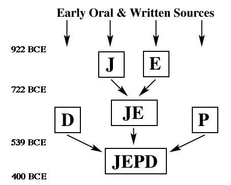
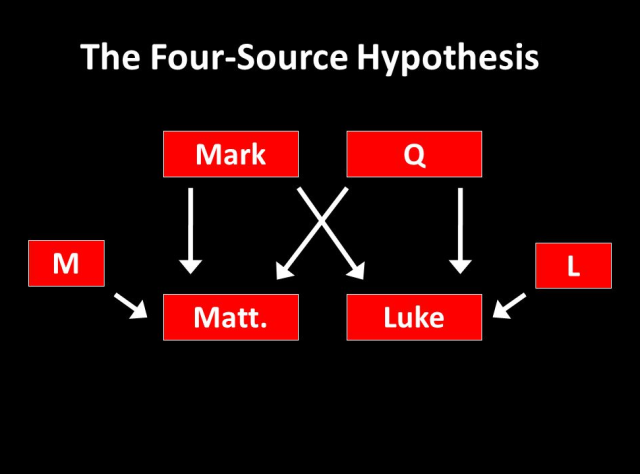

A Peek into Methods used by Biblical History Scholars
Blogs
An Illustration of the Documentary Hypothesis by Analysis of the
Biblical Creation Story

The Documentary Hypothesis is a theoretical model used by biblical
scholars to explain details in the Torah (Pentateuch) that suggest
that it was written by many different authors. It explains the
inconsistencies, redundancy, and misdating in the Pentateuch. The
documentary hypothesis challenges the view that the Pentateuch was
written by Moses, and postulates that the Pentateuch is a collection
of four individual accounts which were written at different time
periods. The earliest of these accounts is the Jahwist (J) source (c.
950 BCE) and it describes God as a deity that directly interacts with
humans. The Elohist (E) source is dated slightly later and according
to this source God interacts with humans indirectly, mostly through
dreams and messengers. The Deuteronomist (D) source is dated to
700-800 BCE and is almost entirely an account of the book of
Deuteronomy. The Priestly (P) source is dated to 500 BCE and it
stresses the rituals of worship and the crucial role of the priests
and Levites. An illustration of the documentary hypothesis can be seen
in the creation of plants of the earth and the creation of man (and
woman). According to the P Source, God created the vegetation and
trees on the third day (Gen 1: 11-13) before creating humans (Gen 1:
26, 31). In this account, it appears that God has created every
physical part of the earth he wanted to create. He creates the animals
and humans last. However, the J source states that God created man
first on the same day he formed the earth (Gen 2:4b, 2:7) before
creating plants and trees (Gen 2:9). Another example can be taken from
the creation of the animals. The Priestly source states that God
created sea animals and birds out of the waters on the fifth day (Gen
1:20, 23) and land animals and man on the sixth day (Gen 1:31). He
creates all animals before creating humans to “…subdue every living
thing…”. According to the J source, God creates man first from the
dust of the earth before creating the land animals and birds because
he did not want man to be alone (Gen 2:7, 18-19). A third example is
the account of the creation of man and woman. According to the P
source, God creates “humankind”, that is, man and woman at the same
time. This source states that “…male and female created he them…” (Gen
1:27), implying that man and woman were created without any
attestation to the superiority of one over the other. The J source,
however, gives a significantly different account of the creation of
humans, and it is this account that is widely recognized by people who
have at least a little knowledge of the biblical story of creation.
This source states that God created man first (Gen 2:7), then decided
that “…it is not good that the man should be alone…” and so tries to
create a helper as his partner. God then creates the animals and
finally woman from one of the man’s ribs to be his helper. (Gen 2:18,
22-23). This account subtly implies that woman was not created equal
to man, but rather as his “helper and partner”. It should be noted
that the priestly source does not describe how God creates humans, but
just states that he creates them. However, the J source gives a more
detailed account of the creation of humans. It states that the man was
created from “the dust of the earth” and the “breath of life” while
the woman was created from one of the man’s ribs (Gen 2:7, 21-22). A
major observation about the different accounts of the creation story
are the different names used to portray the biblical God. This use of
different names to refer to God strongly supports the documentary
hypothesis’ claim that the Torah was written by many different
authors. The Priestly account of creation refers to God as “Elohim”, a
Hebrew word simply meaning “god”. The J source refers to God by his
divine name “Yahweh” which is translated to “Lord God”. The portrayal
of God as Elohim in the priestly account of creation suggests that God
did not communicate with the humans he created directly, but rather
through dreams or visions. The portrayal of God as Yahweh in the J
source alludes to God communicating directly with humans. This
critical analysis of the different accounts of creation strongly
supports the documentary hypothesis’ claim that the authorship of the
Torah was not the work of one person, but rather the work of different
scholars and authors across different time periods.
The Synoptic Problem and the Four-Source Hypothesis

The Synoptic Problem is the problem of how to explain the literary
relationships among the first three books of the new testament and of
the gospels—Matthew, Mark, and Luke. These “Synoptic Gospels” contain
many similar stories and sayings often narrated with the same wording
and in the same order. Scholars have long since tried to figure out
the sources of these three books, and to determine which, if any, of
them is a source for the other two. A lot of the stories in the three
gospels can be arranged in three parallel columns and compared. These
arrangements are called Synoptic Parallels. The Four-Source
Hypothesis, developed in Germany, is the most widely accepted
explanation of the sources of the synoptic gospels. A major postulate
of the four-source hypothesis is that Mark was the first of the three
gospels to be written and copied, in part, by the other two gospels,
and is therefore one of the four sources of the gospels. This view is
often referred to as the Markan Priority. The Markan Priority is so
widely accepted because the patterns of arrangement of many of the
stories and the characteristics of changes made in each account imply
that Matthew and Luke could have copied from Mark but not the other
way around. The second source is the Q source (from the German word
“Quelle”, which means “source”) which is the source of stories found
in Matthew and Luke but not in Mark. The third source is the M source,
which is thought to be the source of stories found in the Gospel of
Matthew only. Similarly, the L source is the source of stories found
only in the Gospel of Luke. An example of a synoptic parallel
comparison is the story of the rich young man (Matt 19:16-22; Mark
10:17-22; Luke 18:18-23). The wording of the story is mostly the same
in all three gospels and, as expected, there are some additions and
omissions made in Matthew and Luke. Some of the changes Matthew makes
are the addition of certain adjectives such as “good” (Matt 16:16;
Mark 10:17) and “perfect” (Matt 16:21; Mark 10:21). Unlike Matthew and
Mark, Luke specifies that the rich young man is a ruler, and this
information was likely gotten from the L source (Luke 18:18). In
Matthew and Luke, the commandment “you shall not defraud” is omitted
(Matt 16:18; Mark 10:19; Luke 18:20). Also, in Mark it states that
Jesus developed some sort of affection for the rich young man, but it
does not do so in Matthew or Luke (Matt 16:21; Mark 10:21; Luke
18:22). Another example is the account of the baptism of Jesus (Matt
3:13-17; Mark 1:9-11; Luke 3:21-22). The accounts in Mark and Luke are
very similar with only two major differences. In Mark, John is named
as the person who baptized Jesus, but not in Luke (Mark 1:9;
Luke3:21). Also, in Mark the Holy Spirit descends on Jesus as he is
getting out of the water, but in Luke the spirit descends on Jesus
when he was praying after being baptized (Mark 1:10; Luke 3:21-22). In
Matthew, however, there is a dialogue between Jesus and John before
Jesus gets baptized (Matt 2:14-15). This implies that the account of
the baptism in Luke was most likely copied only from Mark, while the
account in Matthew could have been gotten from both Mark and the M
source. A third example is the account of the temptation of Jesus in
the wilderness which follows immediately after his baptism (Matt
4:1-11; Mark 1:12-13; Luke 4:1-13). This example is different in that
the account in Mark is very short and only takes up two verses, while
in Matthew and Luke it spans over ten verses each. In Mark, it is
simply stated that Jesus spent forty days in the wilderness being
tempted by Satan and being waited on by angels (Mark 1:13). In Matthew
and Luke, however, it is also stated that Jesus fasted for forty days
and forty nights (Matt 4:2; Luke 4:2). Also, the temptations Jesus
faced were described in almost the same words in Matthew and Luke,
although not in the same order (Matt 4:3-8; Luke 4:3-12). This major
difference in content is a solid proof of the existence of the Q
source. The account of the rich young man illustrates the Markan
Priority and proves the existence of an L source while the story of
Jesus’ baptism proves the existence of an M source. The account of his
temptation proves the existence of a Q source. These three examples of
synoptic parallels illustrate the synoptic problem and prove the
validity of the four-source hypothesis.